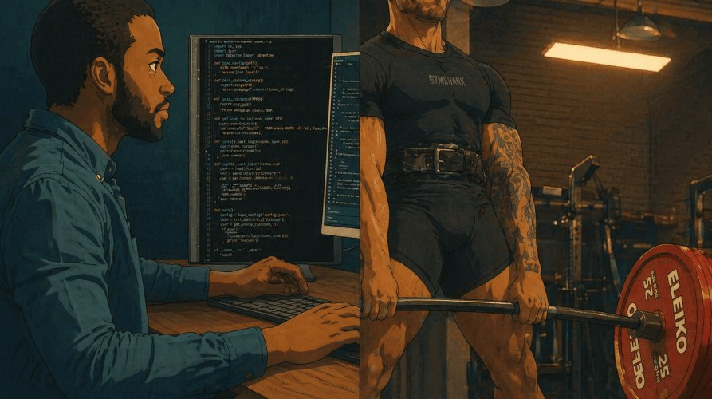
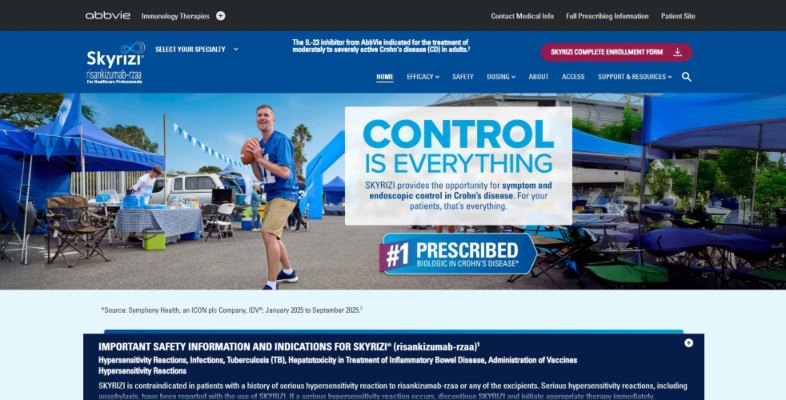
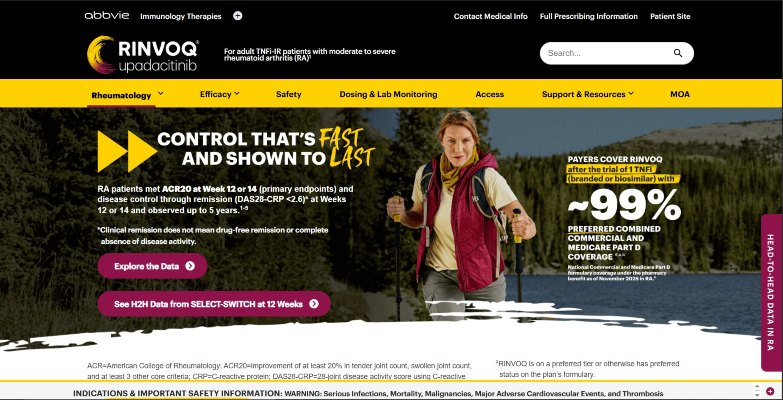
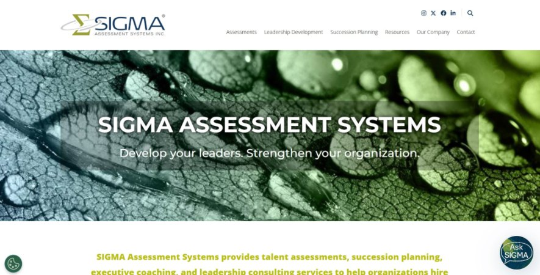
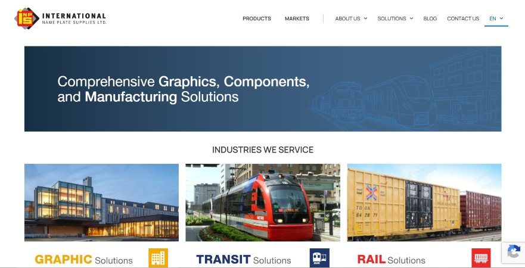

Hello I'm
Ndumiso Mguni
Frontend Web Developer


Hello I'm
Frontend Web Developer
Get To Know More

Outside of work, I spend a lot of time in the gym, mainly focused on powerlifting and strength training. I also enjoy cooking, especially hosting dinner parties or BBQs with friends in the summer. Traveling is another big interest of mine, particularly getting to experience different cultures and try new food.
While I’m committed to my work as a developer, I value having a strong balance outside of it. It helps me stay refreshed, motivated, and consistently bring my best into what I do.
Explore My
3 years
Managed and optimized nine WordPress and headless CMS websites, improving performance, accessibility, and overall user experience. Worked closely with marketing to turn design concepts into responsive landing pages that increased engagement and conversions. Used analytics and A/B testing to guide improvements and support data-driven decisions. Simplified content updates by enhancing WordPress themes and editor workflows, while also automating lead processes to reduce spam and improve efficiency. Served as the main technical point of contact, keeping projects on track and stakeholders informed.
JavaScript, PHP HTML, CSS, WordPress, Headless CMS, SEO, MySQL
2 years
Built and maintained AEM websites for pharmaceutical clients, ensuring accessibility and regulatory compliance. Translated designs into responsive web components to deliver a consistent experience across devices. Supported regular site releases by troubleshooting issues and coordinating with design and QA teams. Developed dynamic site features and integrated external data sources. Led a team on key projects, managing timelines and clearly communicating progress to stakeholders.
AEM, JavaScript, React, Gatsby, HTML/CSS, SCSS, JSON, jQuery, Figma
2 years
Developed and maintained WordPress and Drupal websites with a focus on performance, accessibility, and SEO. Partnered with marketing and content teams to implement site updates and improvements. Improved search visibility through SEO best practices and structured data enhancements. Set up analytics and tracking to measure performance and inform optimizations. Assisted with troubleshooting and documenting technical fixes across projects.
HTML, CSS, JavaScript, PHP, Figma, WordPress, Drupal
Browse My Recent
** Chairman Mills recently rebranded, bringing all its companies together under one unified brand: Element Event Solutions. The original website is no longer fully accessible, but you can still view it via the Wayback Machine using the “Live Site” button. **
At Chair-man Mills, I supported and optimized a network of nine WordPress and Headless CMS websites, focusing on compliance, accessibility, and seamless user experience.
I customized WordPress themes using PHP, ACF, and Gutenberg blocks to simplify content authoring workflows. Using Zapier and Monday.com automations.
Acting as the main technical point of contact, I communicated project updates, deployment timelines, and technical solutions to non‑technical teams keeping site launches on track and stakeholders fully informed.

I led the end-to-end development of both the Skyrizi and Rinvoq website projects. Below is an overview of my key responsibilities for each.
Lead Developer Coordination: Collaborated closely with Project Managers and Quality Assurance (QA) teams to ensure alignment with project requirements, critical deadlines, and desired functionality. Proactively escalated major issues to mitigate potential delays.
Design Integration: Utilised PSD, Sketch files, and content matrices as references to implement designs into web pages. Customised and modified stock Adobe Experience Manager (AEM) components using HTML, CSS/SASS and JavaScript to match design specifications.
Content Consistency: Worked alongside Design and Scr Reg teams to ensure consistent and accurate display of content across diverse web pages and applications. Cross-Browser Compatibility: Ensured seamless user experiences across multiple browsers including Chrome, Firefox, and occasionally Internet Explorer. Employed simulators such BrowserStack for comprehensive testing.

Responsive Design Implementation: Implemented responsive design principles to optimise web pages and applications for various devices and screen sizes, enhancing accessibility and usability.
Documentation and Best Practices: Created and maintained comprehensive documentation pertaining to development processes and best practices, fostering clarity and efficiency within the team.
Troubleshooting and Debugging: Demonstrated proficiency in troubleshooting and debugging issues to maintain smooth functionality and resolve technical challenges promptly.
Screenshot Tool Optimization: Optimised the Screenshot tool using JSON and jQuery to capture clear images of each page and modal, enhancing the efficiency of visual documentation processes.

Transform PDF’s into working pages in the succession planning section.
Upload content to the blog page along with optimizing images.
Screaming Frog crawler to audit sites for common SEO issues by extracting data & auditing for common SEO issues. (Find broken Links audit redirects, discover duplicate content, analyze page titles & MetaData just to name a few).

Transform PDF’s into working pages for the Canadian, US, and Mexican Sites
Page rebuilds were completed for all the Rail, Graphic, Transit, OEM, and Fleet Solutions pages.
Optimized images in compliance with SEO standards.
Built With Drupal
Get in TOuch